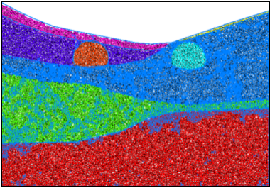
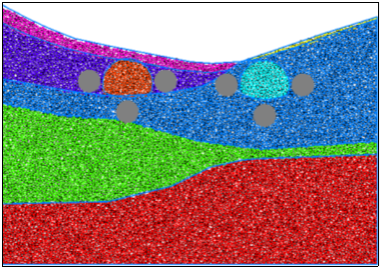
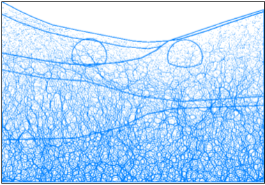
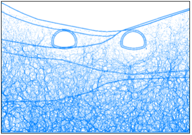
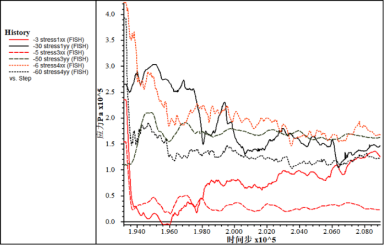
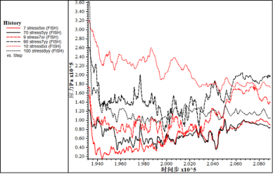
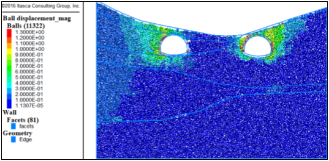
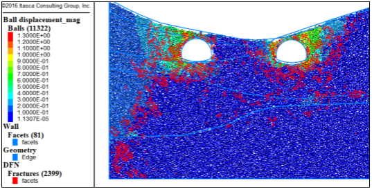

该段隧道定位于SZK1-1、SZK1-2地质钻孔处，主要岩层为强风化砂岩上覆碎石土和粉质粘土，有软弱层
(1)初始模型

图1 初始模型

图2 测量点分布
根据工程地质横断面图在CAD中等比例绘制隧道断面图，根据断面图等比例生成的杨梅一隧道出口段离散元模型如图1所示，地层从上到下主要为碎石土、全风化页岩、强风化页岩、软弱层。图2给出了相关量测点位置信息，测量点顺序按照顺时针标记。
(2)力链分布及调整

图3 初始力链
隧道围岩强度普遍偏低，因此整体力链数值都是偏小，分布差异受重力影响较大，方向以竖直为主。由于软弱层的尺寸和岩体破碎程度较大，力链的分布并不是很均匀。左右两隧道皆位于风化程度较高岩体内，隧道开挖后应力释放明显，隧道周围力链明显减少。

图4 力链调整
(3)开挖过程应力调整及位移场
表19 初始地应力
量测点 | 水平应力/MPa | 垂直应力/MPa |
1 | 0.24 | 0.27 |
2 |
|
|
3 | 0.15 | 0.11 |
4 | 0.42 | 0.39 |
5 | 0.15 | 0.12 |
6 |
|
|
7 | 0.17 | 0.26 |
8 | 0.32 | 0.36 |
图5和图6给出了开挖过程中应力调整的具体信息，1号测量点水平应力在波动中先卸载后加载，竖直应力先加载后卸载。3号测量点水平应力卸载，竖直应力先加载后卸载。4号测量点水平应力和竖直应力皆显著卸载。5号测量点水平应力卸载，竖向应力卸载。7号测量点水平应力卸载，竖向应力卸载。8号测量点水平应力和竖直应力皆卸载。
从图7和8中可以看出，由于埋深较浅，岩层风化严重，岩体极为破碎且有软弱层存在，因此扰动过程中容易发生坍塌，位移量较大，两侧隧道围岩发生大面积塌陷，裂纹扩展严重，应力调整过程中甚至会导致岩体条件更为破碎。

图5 左侧隧道应力调整

图6 右侧隧道应力调整

图7 位移

图8 裂纹扩展